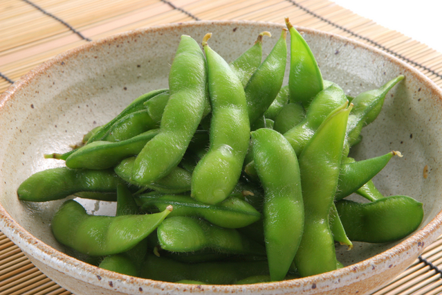
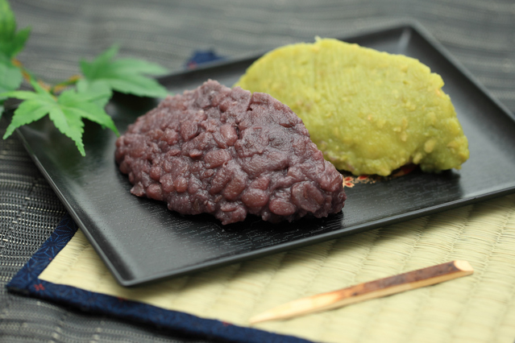

枝豆の栄養素はスゴい
枝豆は大豆を未成熟で収穫したものですが、たくさんの栄養がつまっています。
枝豆のタンパク質に含まれる成分はアルコールの分解を促します。
カリウムも多く含まれており、塩分を体の外に排出する手伝いをしています。
代表的な豆料理
枝豆
未成熟で収穫した大豆を枝付きのまま茹でたので「枝豆」と呼ばれるようになりました。塩茹でして食べると非常に美味です。
沸騰した湯で茹でますが、茹で上がった豆を冷水でさらしてはいけません。
濃厚な風味が損なわれることになります。
ずんだ
ゆでた枝豆をすり潰して作ります。
ずんだを餅にまぶしたものは「ずんだ餅」といって宮城県の特産品です。
主に夏の時期に食べられ、非常に風味が良いのが特徴です。